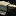

Rise of Nations (Türkçesi: Ulusların Yükselişi), Civilization 2 ve Alpha Centauri oyunlarında çalışmış olan Brian Reynolds öncülüğündeki Big Huge Games'in yapımcılığını, Microsoft Game Studios'un ise dağıtımcılığını üstlendiği 20 Mayıs 2003'te yayınlanmış gerçek zamanlı strateji türünde bir oyundur.
28 Nisan 2004 tarihinde oyuna Thrones and Patriots (Türkçesi: Tahtlar ve Yurtseverler) adlı bir ek paket çıkarıldı. 2004'ün ilerleyen günlerinde ikisi birden Gold Edition (Altın Sürüm) adı altında satılmaya başlandı.
Bknz: Gold Edition
Rise of Nations, yüzeysel bakıldığında normal bir strateji oyunu gibidir. Oyuna bir üsle başlanır, ardından birkaç bina yapılarak hammadde toplanmaya ve bir ordu kurarak düşman kentler ele geçirilmeye çalışılır. Fakat Rise of Nations'ı bir klasik yapan ufak oynanış ayrıntılarıdır. Oyun, "Toprak" yani bölge fikrini uygulamıştır. Oyunda yeni şehirler kurularak sınırlar genişletilebilir. Bir şehrin yanına dikilen tapınak ve kaleler o şehrin sınırlar üzerindeki etkisini arttırır. Şehirlerin önemi oyunda fazla olduğu için, düşman saldırısında şehirler yok edilmezler, onun yerine belli bir süre asimile edilene kadar tarafsız kalırlar, ardından eğer geri alınamamışsa düşman kontrolüne geçerler ve bu da oyunun gerçekçiliğini arttırır. Ayrıca oyunda yapılan şehirler değiştirilebilir ve böylelikle fethedilen yerlerden istenileni başkent yapılabilir. Şehirler aynı zamanda ekonomiye de katkıda bulunur. Oyunda toplanması gereken kaynaklardan biri de paradır (Wealth ) ve para sadece şehirler veya müttefiklerin şehirleri arasında kurulan karavan ticaretiyle elde edilebilir. Bu nedenle şehir kurmak iyi bir oyunun her açıdan temelini oluşturur. Diğer kaynaklar ise "Food" , "Wood" , "Metal" , "Oil" ve "Knowledge" 'den oluşur. Yiyecek, Odun ve Para kaynakları ilk çağdan (Antik Çağ) itibaren oyunda açıkken; diğer çağlarda sırasıyla Metal, Bilgi ve Petrol açılır. Kaynak toplama sistemi diğer stratejilerden farklı işler. Bir yurttaşı doğrudan ağaca veya madenlere göndermek yerine belli binalar inşa edilerek vatandaşlar bu binalarda görevlendirilir. Örnek olarak odun toplamak için bir ormanın kenarına "Ormancı Kampı" kurmak gerekmektedir.